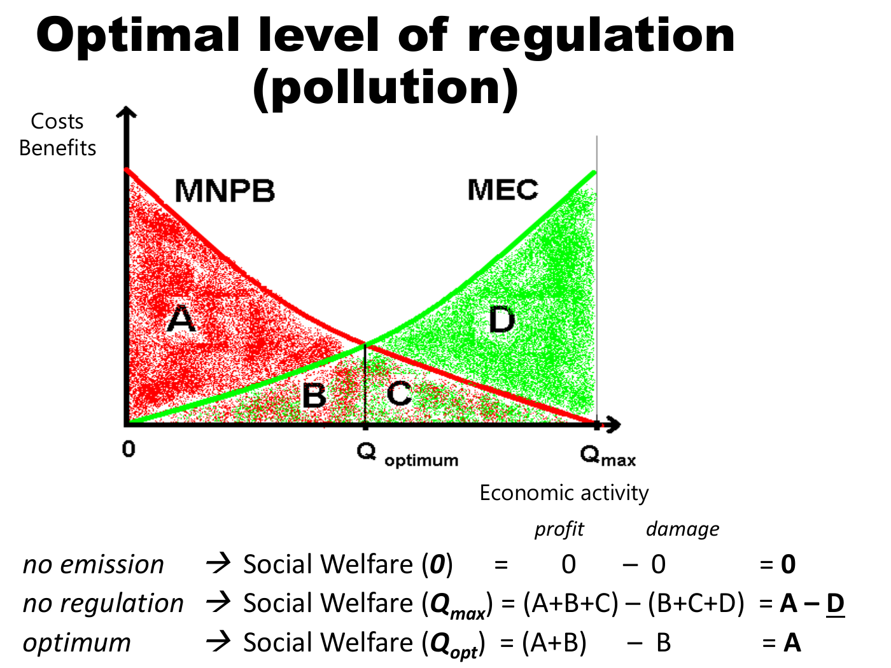

Derive private and social activity optima and marginal corrective signals
Useful first: Identify economic externalities and apply conditional welfare criteria
Lesson outline
- 02IntroductionSee the main question, learning objectives and prerequisites.
- 03Key definitions and conceptsGet familiar with the important terms and notation.
- 04Derive the private and social activity levelsLet the stated quantities denote an activity level over a given period, the stated quantities marginal private benefit, the stated quantities marginal private cost, the stated quantities…
- 05Four different policy conceptsOptimization means choosing an effect level consistent with optimal allocation under the potential Pareto criterion.
- 06Worked exampleFollow a complete application of the reasoning.
- 07Practise the reasoningWork through written tasks, with optional support and solutions.
- 08Check your reasoning: an offline quizCheck your choices and see feedback without a connection.
- 09Check your understandingReview the key distinctions and check what you can explain.
- 10Test yourself laterTry another prepared question before rereading.
- 11SourcesFind the materials and limits behind the lesson.
Introduction
In this lesson, derive private and social activity optima and marginal corrective signals.
2.1 What you’ll learn
- Derive and calculate smooth private/social choices for negative and positive external effects, keeping marginal incentives separate from total harm.
2.2 Before you begin
Check the foundations
Does ordinary competitive price reduction alone add \(\mathrm{MEB}\)?
Reveal foundation explanation
No; distinguish priced consumer benefit from a neglected real welfare relation before adding an external marginal benefit. Otherwise
Key definitions and concepts
- Marginal external cost: Additional neglected harm from one more activity unit.
- Social optimum: A feasible activity level maximizing the specified total benefit less social cost.
- Corrective tax: A marginal signal equal to marginal external harm at the first-best optimum under stated conditions.
Derive the private and social activity levels
Let \(Q\) denote an activity level over a given period, \(MPB(Q)\) marginal private benefit, \(MPC(Q)\) marginal private cost, \(MEC(Q)\) marginal external cost and \(MEB(Q)\) marginal external benefit. Marginal quantities are money or welfare equivalents per unit of \(Q\), measured on a common basis. In the source's smooth partial-equilibrium diagrams, private choice satisfies
Without external effects this also maximizes the area between the benefit and cost curves. With negative external effects,
An explanatory mathematical reconstruction of the diagram is
so that \(W'(Q)=MPB(Q)-MPC(Q)-MEC(Q)\). The interior optimum sets this derivative to zero;
a negative second derivative or suitable concavity is needed for a maximum. The source's increasing marginal external cost and decreasing net private benefit produce \(Q^*<Q^0\).
This formula is a synthesis of the source's areas, rather than an extra empirical model. It excludes other distortions and any fixed costs absent from the diagram.

Lecture physical PDF p. 15: the downward curve is marginal net private benefit (\(MNPB=MPB-MPC\)), the upward curve is MEC. At zero activity, the diagram normalizes welfare to zero.
At unrestricted \(Q_{max}\), private net benefit is \(A+B+C\) and damage is \(B+C+D\), giving \(A-D\). At \(Q_{optimum}\), private net benefit is \(A+B\), damage is \(B\), and welfare is \(A\).
The increase from restriction is \(D\), while \(B\) remains as optimal damage.
The lettered areas in this lecture figure differ from those in Verhoef's Figure 13.1. In the chapter's negative-externality panel, \(A\) denotes optimal external damage and \(C\) the deadweight loss avoided by restricting activity.
Area labels must always be read within their own figure. Optimization does not imply eliminating all external damage.
Nor is reducing production necessarily a strict Pareto improvement: the supplier loses private returns and would need appropriate compensation to satisfy that stronger criterion.
For a positive externality, social benefit is \(MSB=MPB+MEB\) and the condition is
The source's diagrams imply \(Q^*>Q^0\): the supplier otherwise omits part of the benefit. A correcting subsidy \(s^*=MEB(Q^*)\) can align the private choice, just as \(t^*=MEC(Q^*)\) can correct the negative externality in the simple setting. These are marginal, optimum-specific rates, not total damage divided arbitrarily by output.

Lecture p. 17: adding the external benefit raises MSB above MPB, moves the chosen output from \(Q^0\) toward \(Q^*\) and supplies the subsidy wedge \(s^*\).
The lecture p. 18 compares output below, at and above \(Q^*\) using coloured areas. Its line for \(Q^+>Q^*\) adds the pointwise expression \(MSB[q^+]-MPC[q^+]\) to areas \(A+B+C\).
A marginal value and a total welfare area have different dimensions; that printed expression should not be used as a complete total-welfare identity.
The reliable comparison follows the marginal curves: beyond their intersection the extra activity has negative marginal social surplus, so its accumulated welfare effect is the integral of that negative difference. This dimensional clarification is Explanation of the diagram and the chapter's area definition.
4.1 Why a cost reduction is not a new external benefit

Verhoef , printed pp. 202–203, Figure 13.1: normal market choice, negative external cost, positive external benefit and pecuniary benefit. The original spread has been rotated for readability.
In panel (d), a lower private cost curve lowers social cost too, assuming the external cost function is unchanged. The new efficient output can increase, and lower market prices increase consumer surplus through a movement along MPB.
That price-mediated benefit is pecuniary. The external wedge remains: new unrestricted output still exceeds the new optimum.
Calling the extra consumer surplus an external benefit would wrongly suggest another subsidy on top of the remaining correction.
Four different policy concepts
Optimization means choosing an effect level consistent with optimal allocation under the potential Pareto criterion. Compensation is a transfer covering the receptor's welfare effect. Internalization, in the chapter's narrow terminology, removes the external character by creating a market for the effect or gathering interests, for example by merging an upstream and a downstream firm. Regulation is direct government intervention, including taxes, standards or permits. The chapter explicitly notes that Pigouvian taxation is often called internalization in broader usage, although it does not create a market and thus fails its narrow definition.
Use both regulation and market creation in explaining remedies. Preserve that terminology difference rather than equating all four operations.
A transfer need not optimize behaviour. If receptors are automatically reimbursed for residual harm or protective spending, they may have less reason to choose efficient defensive measures. Conversely, a negotiated payment under well-defined rights can coexist with efficient choice because the bargain itself governs the effect. The abatement-and-defence model shows why incentives at both sides matter.
Worked example
Prompt: Hypothetical smooth monetary curves per unit Q: \(\mathrm{MPB}=100-10Q, \mathrm{MPC}=20\); harmful activity \(\mathrm{MEC}=5Q\).
Separately a beneficial-activity illustration has the same MPB/MPC and \(\mathrm{MEB}=2Q\). All optima interior, \(Q\ge 0\) and displayed linear curvatures maintained.
Derive private and each social first-order condition from integrated welfare; compute \(Q_0\), harmful \(Q^{*}\), optimal marginal tax and remaining total damage, and beneficial \(Q^{*}\).
State the concavity and units checks, why zero harm is not the goal, and why a private-cost reduction or compensation alone is not a new technological benefit or a complete incentive correction.
Steps and interpretation: Private derivative \(\mathrm{MPB}-\mathrm{MPC}=0\) gives \(Q_0=(100-20)/10=8.000000\). Harmful welfare derivative \(\mathrm{MPB}-\mathrm{MPC}-\mathrm{MEC}=80-(10+5)Q=0\) gives \(Q^{*}=5.333333\), curvature \(-(10+5)<0\).
Tax \(t^{*}=\mathrm{MEC}(Q^{*})=26.666667\) money/unit, rather than total damage. Damage integral \(\int_0^{Q^{*}}5Q\,dQ=71.111111\) money, positive at optimum. \(W\) counts area benefits less costs;
derivatives are money per unit \(Q\). Beneficial derivative \(\mathrm{MPB}+\mathrm{MEB}-\mathrm{MPC}=80-(10-2)Q=0\) gives \(Q^{*}=10.000000\);
the displayed demand slope \(10>2\) makes curvature negative. Benefit-side correction is marginal subsidy \(\mathrm{MEB}(Q^{*})\) under the same first-best conditions.
Private-cost reduction changes a priced schedule; it can raise consumer surplus without removing the external wedge, so not automatically a new neglected external benefit.
Compensation distributes money; without changing the marginal objective it need not optimise behaviour.
Feasibility/boundaries and other distortions can invalidate this simple tax/subsidy comparison; no literal-area-letter mixing between diagrams.
Practise the reasoning
Write your reasoning before revealing an explanation. Begin with support, then apply the ideas to another situation.
7.1 Written exercise 1
Hypothetical smooth monetary curves per unit Q: \(\mathrm{MPB}=80-8Q, \mathrm{MPC}=16\);
Solve the following:
- harmful activity \(\mathrm{MEC}=4Q\).
- Separately a beneficial-activity illustration has the same MPB/MPC and \(\mathrm{MEB}=1Q\).
- All optima interior, \(Q\ge 0\) and displayed linear curvatures maintained.
- Derive private and each social first-order condition from integrated welfare;
- compute \(Q_0\), harmful \(Q^{*}\), optimal marginal tax and remaining total damage, and beneficial \(Q^{*}\).
- State the concavity and units checks, why zero harm is not the goal, and why a private-cost reduction or compensation alone is not a new technological benefit or a complete incentive correction.
Show a hint
Pause before calculating or choosing an explanation:
- What quantities, actors or outcomes are being compared? Write their roles, units and dates beside them.
- Which condition decides whether the relationship applies? Check the relevant definition before using a formula or classifying the case.
- What would have to remain fixed for your comparison to be meaningful? Work through one link in the reasoning at a time.
- How could you check the direction, boundary case or alternative explanation before stating your conclusion?
A local draft for your own study.
Reveal explanation
Key: Private derivative \(\mathrm{MPB}-\mathrm{MPC}=0\) gives \(Q_0=(80-16)/8=8.000000\). Harmful welfare derivative \(\mathrm{MPB}-\mathrm{MPC}-\mathrm{MEC}=64-(8+4)Q=0\) gives \(Q^{*}=5.333333\), curvature \(-(8+4)<0\).
Tax \(t^{*}=\mathrm{MEC}(Q^{*})=21.333333\) money/unit, rather than total damage. Damage integral \(\int_0^{Q^{*}}4Q\,dQ=56.888889\) money, positive at optimum. \(W\) counts area benefits less costs;
derivatives are money per unit \(Q\). Beneficial derivative \(\mathrm{MPB}+\mathrm{MEB}-\mathrm{MPC}=64-(8-1)Q=0\) gives \(Q^{*}=9.142857\);
the displayed demand slope \(8>1\) makes curvature negative. Benefit-side correction is marginal subsidy \(\mathrm{MEB}(Q^{*})\) under the same first-best conditions.
Private-cost reduction changes a priced schedule; it can raise consumer surplus without removing the external wedge, so not automatically a new neglected external benefit.
Compensation distributes money; without changing the marginal objective it need not optimise behaviour.
Feasibility/boundaries and other distortions can invalidate this simple tax/subsidy comparison; no literal-area-letter mixing between diagrams.
7.2 Written exercise 2
Hypothetical smooth monetary curves per unit Q: \(\mathrm{MPB}=120-12Q, \mathrm{MPC}=24\);
Solve the following:
- harmful activity \(\mathrm{MEC}=6Q\).
- Separately a beneficial-activity illustration has the same MPB/MPC and \(\mathrm{MEB}=3Q\).
- All optima interior, \(Q\ge 0\) and displayed linear curvatures maintained.
- Derive private and each social first-order condition from integrated welfare;
- compute \(Q_0\), harmful \(Q^{*}\), optimal marginal tax and remaining total damage, and beneficial \(Q^{*}\).
- State the concavity and units checks, why zero harm is not the goal, and why a private-cost reduction or compensation alone is not a new technological benefit or a complete incentive correction.
A local draft for your own study.
Reveal explanation
Explanation: Private derivative \(\mathrm{MPB}-\mathrm{MPC}=0\) gives \(Q_0=(120-24)/12=8.000000\). Harmful welfare derivative \(\mathrm{MPB}-\mathrm{MPC}-\mathrm{MEC}=96-(12+6)Q=0\) gives \(Q^{*}=5.333333\), curvature \(-(12+6)<0\).
Tax \(t^{*}=\mathrm{MEC}(Q^{*})=32.000000\) money/unit, rather than total damage. Damage integral \(\int_0^{Q^{*}}6Q\,dQ=85.333333\) money, positive at optimum. \(W\) counts area benefits less costs;
derivatives are money per unit \(Q\). Beneficial derivative \(\mathrm{MPB}+\mathrm{MEB}-\mathrm{MPC}=96-(12-3)Q=0\) gives \(Q^{*}=10.666667\);
the displayed demand slope \(12>3\) makes curvature negative. Benefit-side correction is marginal subsidy \(\mathrm{MEB}(Q^{*})\) under the same first-best conditions.
Private-cost reduction changes a priced schedule; it can raise consumer surplus without removing the external wedge, so not automatically a new neglected external benefit.
Compensation distributes money; without changing the marginal objective it need not optimise behaviour.
Feasibility/boundaries and other distortions can invalidate this simple tax/subsidy comparison; no literal-area-letter mixing between diagrams.
All components are required.
7.3 Written exercise 3
Hypothetical smooth monetary curves per unit Q: \(\mathrm{MPB}=90-9Q, \mathrm{MPC}=18\);
Solve the following:
- harmful activity \(\mathrm{MEC}=3Q\).
- Separately a beneficial-activity illustration has the same MPB/MPC and \(\mathrm{MEB}=2Q\).
- All optima interior, \(Q\ge 0\) and displayed linear curvatures maintained.
- Derive private and each social first-order condition from integrated welfare;
- compute \(Q_0\), harmful \(Q^{*}\), optimal marginal tax and remaining total damage, and beneficial \(Q^{*}\).
- State the concavity and units checks, why zero harm is not the goal, and why a private-cost reduction or compensation alone is not a new technological benefit or a complete incentive correction.
A local draft for your own study.
Reveal explanation
Explanation: Private derivative \(\mathrm{MPB}-\mathrm{MPC}=0\) gives \(Q_0=(90-18)/9=8.000000\). Harmful welfare derivative \(\mathrm{MPB}-\mathrm{MPC}-\mathrm{MEC}=72-(9+3)Q=0\) gives \(Q^{*}=6.000000\), curvature \(-(9+3)<0\).
Tax \(t^{*}=\mathrm{MEC}(Q^{*})=18.000000\) money/unit, rather than total damage. Damage integral \(\int_0^{Q^{*}}3Q\,dQ=54.000000\) money, positive at optimum. \(W\) counts area benefits less costs;
derivatives are money per unit \(Q\). Beneficial derivative \(\mathrm{MPB}+\mathrm{MEB}-\mathrm{MPC}=72-(9-2)Q=0\) gives \(Q^{*}=10.285714\);
the displayed demand slope \(9>2\) makes curvature negative. Benefit-side correction is marginal subsidy \(\mathrm{MEB}(Q^{*})\) under the same first-best conditions.
Private-cost reduction changes a priced schedule; it can raise consumer surplus without removing the external wedge, so not automatically a new neglected external benefit.
Compensation distributes money; without changing the marginal objective it need not optimise behaviour.
Feasibility/boundaries and other distortions can invalidate this simple tax/subsidy comparison; no literal-area-letter mixing between diagrams.
All components are required.
7.4 Another chance to practise
Fresh narrow check: at optimum \(Q^{*}=4\), \(\mathrm{MEC}(Q)=2Q\).
Solve the following:
- Optimal marginal tax and total remaining damage?
A local draft for your own study.
Reveal explanation
Tax \(t^{*}=8\) money/unit \(Q\); damage \(\int_0^{4} 2Q\,dQ=16\) money. Their different units prevent equating them.
Check your reasoning: an offline quiz
Choose one answer per question. Check individual answers or check the whole quiz. Each option includes feedback on the reasoning, and everything works offline.
Reveal explanation
Private:\(80-10Q=0\). Social:\(80-15Q=0\), with the stated concavity/interior assumptions.
Reveal explanation
Evaluate \(MEC=5Q\) at the social optimum; do not substitute total damage.
Reveal explanation
Solve \(80-(10-2)Q=0\) with negative curvature.
Check your understanding
If a learner combines total damage with a marginal equation, label axes: curve money/unit \(Q\), area money. Compute the derivative first, then integrate damage separately.
- Derive and calculate smooth private/social choices for negative and positive external effects, keeping marginal incentives separate from total harm.
Test yourself later
Return to these questions after a break, before rereading the explanation. Use a question you have not just viewed.
10.1 Review question 1
Hypothetical smooth monetary curves per unit Q: \(\mathrm{MPB}=140-14Q, \mathrm{MPC}=28\);
Solve the following:
- harmful activity \(\mathrm{MEC}=7Q\).
- Separately a beneficial-activity illustration has the same MPB/MPC and \(\mathrm{MEB}=4Q\).
- All optima interior, \(Q\ge 0\) and displayed linear curvatures maintained.
- Derive private and each social first-order condition from integrated welfare;
- compute \(Q_0\), harmful \(Q^{*}\), optimal marginal tax and remaining total damage, and beneficial \(Q^{*}\).
- State the concavity and units checks, why zero harm is not the goal, and why a private-cost reduction or compensation alone is not a new technological benefit or a complete incentive correction.
A local draft for your own study.
Reveal explanation
Explanation: Private derivative \(\mathrm{MPB}-\mathrm{MPC}=0\) gives \(Q_0=(140-28)/14=8.000000\). Harmful welfare derivative \(\mathrm{MPB}-\mathrm{MPC}-\mathrm{MEC}=112-(14+7)Q=0\) gives \(Q^{*}=5.333333\), curvature \(-(14+7)<0\).
Tax \(t^{*}=\mathrm{MEC}(Q^{*})=37.333333\) money/unit, rather than total damage. Damage integral \(\int_0^{Q^{*}}7Q\,dQ=99.555556\) money, positive at optimum. \(W\) counts area benefits less costs;
derivatives are money per unit \(Q\). Beneficial derivative \(\mathrm{MPB}+\mathrm{MEB}-\mathrm{MPC}=112-(14-4)Q=0\) gives \(Q^{*}=11.200000\);
the displayed demand slope \(14>4\) makes curvature negative. Benefit-side correction is marginal subsidy \(\mathrm{MEB}(Q^{*})\) under the same first-best conditions.
Private-cost reduction changes a priced schedule; it can raise consumer surplus without removing the external wedge, so not automatically a new neglected external benefit.
Compensation distributes money; without changing the marginal objective it need not optimise behaviour.
Feasibility/boundaries and other distortions can invalidate this simple tax/subsidy comparison; no literal-area-letter mixing between diagrams.
All components are required.
10.2 Review question 2
Hypothetical smooth monetary curves per unit Q: \(\mathrm{MPB}=110-11Q, \mathrm{MPC}=22\);
Solve the following:
- harmful activity \(\mathrm{MEC}=5Q\).
- Separately a beneficial-activity illustration has the same MPB/MPC and \(\mathrm{MEB}=3Q\).
- All optima interior, \(Q\ge 0\) and displayed linear curvatures maintained.
- Derive private and each social first-order condition from integrated welfare;
- compute \(Q_0\), harmful \(Q^{*}\), optimal marginal tax and remaining total damage, and beneficial \(Q^{*}\).
- State the concavity and units checks, why zero harm is not the goal, and why a private-cost reduction or compensation alone is not a new technological benefit or a complete incentive correction.
A local draft for your own study.
Reveal explanation
Explanation: Private derivative \(\mathrm{MPB}-\mathrm{MPC}=0\) gives \(Q_0=(110-22)/11=8.000000\). Harmful welfare derivative \(\mathrm{MPB}-\mathrm{MPC}-\mathrm{MEC}=88-(11+5)Q=0\) gives \(Q^{*}=5.500000\), curvature \(-(11+5)<0\).
Tax \(t^{*}=\mathrm{MEC}(Q^{*})=27.500000\) money/unit, rather than total damage. Damage integral \(\int_0^{Q^{*}}5Q\,dQ=75.625000\) money, positive at optimum. \(W\) counts area benefits less costs;
derivatives are money per unit \(Q\). Beneficial derivative \(\mathrm{MPB}+\mathrm{MEB}-\mathrm{MPC}=88-(11-3)Q=0\) gives \(Q^{*}=11.000000\);
the displayed demand slope \(11>3\) makes curvature negative. Benefit-side correction is marginal subsidy \(\mathrm{MEB}(Q^{*})\) under the same first-best conditions.
Private-cost reduction changes a priced schedule; it can raise consumer surplus without removing the external wedge, so not automatically a new neglected external benefit.
Compensation distributes money; without changing the marginal objective it need not optimise behaviour.
Feasibility/boundaries and other distortions can invalidate this simple tax/subsidy comparison; no literal-area-letter mixing between diagrams.
All components are required.
Sources
Show materials and lesson scope
- Verhoef Externalities, physical PDF pp. 3–5,9 note7
- Lecture, physical PDF pp. 14–15,20
- Lecture, physical PDF pp. 15,25
- Verhoef Externalities, physical PDF pp. 4–5
- Lecture, physical PDF pp. 16–20
- Lecture, physical PDF p. 17
- Lecture, physical PDF p. 18
- Verhoef Externalities, physical PDF pp. 3–5
- Verhoef Externalities, physical PDF p. 4
- Lecture, physical PDF p. 19
- Verhoef Externalities, physical PDF pp. 5,9 note9
- Lecture, physical PDF p. 28
- Verhoef Externalities, physical PDF pp. 5–6
Numerical and contextual illustrations are hypothetical unless explicitly described as a reported result. Historical data, model assumptions and unresolved source differences retain their stated limits.
These exercises are for self-study. Viewing a prepared item or solution may make that item unsuitable as a fresh check in a tutor chat. This page does not record an assessed learning result.